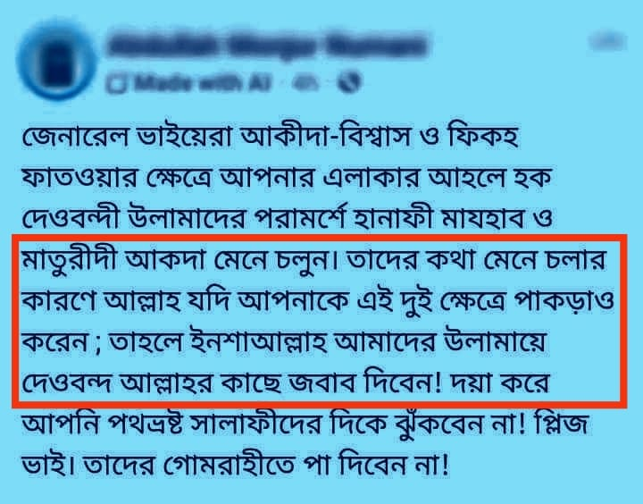

কথা সেটা না; কথা হল, যদি আল্লাহ জেনারেল ভাইদের হানাফি ও মাতুরিদি হওয়ায় পাকড়াও করে…
১৫ জুন, ২০২৪
কথা সেটা না; কথা হল, যদি আল্লাহ জেনারেল ভাইদের হানাফি ও মাতুরিদি হওয়ায় পাকড়াও করে বসেন, তবে তো উলামায়ে দেওবন্দকে আগে পাকড়াও করবেন এবং শক্তভাবে ধরবেন, যেহেতু তারা হানাফিয়্যাহ ও মাতুরিদিয়্যাতের লিড দিয়েছে। আর তারা যদি ধরা পড়ে যান, তাইলে জেনারেল ভাইদের হয়ে জবাব দেয়ার এ স্বপ্ন তো গুড়েবালি হওয়া অবশ্যক।
কতটা অস্তিত্বের সংকট আর হীনমন্যতায় ভোগলে মানুষ এমন পোস্ট করতে পারে!
কথা সেটা না; কথা হল, যদি আল্লাহ জেনারেল ভাইদের হানাফি ও মাতুরিদি হওয়ায় পাকড়াও করে বসেন, তবে তো উলামায়ে দেওবন্দকে আগে পাকড়াও করবেন এবং শক্তভাবে ধরবেন, যেহেতু তারা হানাফিয়্যাহ ও মাতুরিদিয়্যাতের লিড দিয়েছে। আর তারা যদি ধরা পড়ে যান, তাইলে জেনারেল ভাইদের হয়ে জবাব দেয়ার এ স্বপ্ন তো গুড়েবালি হওয়া অবশ্যক।
কতটা অস্তিত্বের সংকট আর হীনমন্যতায় ভোগলে মানুষ এমন পোস্ট করতে পারে!
